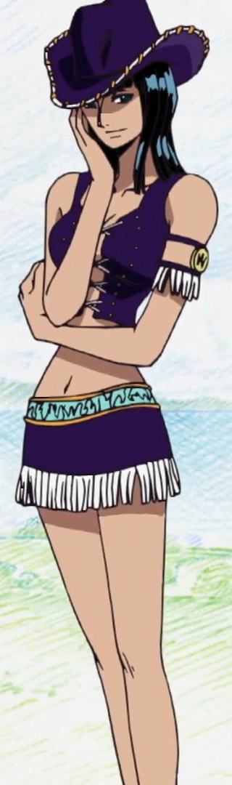

Quem é Nico Robin
Nico Robin nasceu na cidade de Ohara e veio de uma família de arqueólogos. Sua mãe, Nico Olivia saiu para o mar em busca da verdadeira história quando a garota tinha apenas 2 anos, sendo deixada aos cuidados de seu tio Roji e sua esposa. O tio deixava bem claro que não gostava da presença dela, maltratando a criança e não permitindo que ela participasse de qualquer reunião familiar.
Além disso, seus poderes de invocar partes do corpo em qualquer lugar devido sua Hana Hana no Mi assustava outras crianças e até alguns adultos. Robin então encontrou conforto nos livros e na Árvore do Conhecimento, onde os arqueólogos ficavam. Lá ela faz amizade com Clover, o diretor da biblioteca de Ohara. Aos oito anos a garota passa no exame de arqueologia, e se torna um, mas logo depois ela é expulsa por Clover após dizer que ia atrás da verdadeira história – assim como sua mãe.
Triste com os problemas com Clover, Robin foge para um lugar afastado da ilha e acaba encontrando um gigante chamado de Jaguar D. Saul, que estava desmaiado. Depois de acordado, os dois se tornam amigos, enquanto o gigante está construindo um pequeno barco para fugir do local.
Quando Saul descobre que está em Ohara e que Robin é filha de Olivia, ele avisa a garota que uma frota da Marinha está se aproximando da ilha e que todos correm perigo já que eles buscavam sua mãe estava de volta em Ohara. A garota corre para a Árvore do Conhecimento para avisar Clover e os amigos e perguntar sobre sua mãe.
Quando ela chega no local já é tarde demais e todos os arqueólogos foram pegos por Spandine e a CP9, um grupo secreto do Governo Mundial. A árvore é queimada segundo o pretexto de que continha uma parte da história que estava proibida de ser visualizada e estavam prontos para levar Olivia de volta ao barco. Robin percebe que é sua mãe e então começa a gritar por ela.
Como Olivia sabia que se respondesse o chamado a garota seria presa também somente ignora o chamado, até que ela menciona saber ler os Poneglyph. Como o Buster Call, o ataque mais poderoso da Marinha capaz de tirar uma ilha inteira do mapa já estava em andamento, Spandine e a CP9 vão embora da ilha deixando todos lá para morrer.
É então quando Robin consegue mesmo por alguns momentos se reencontrar com sua mãe, mas logo depois Saul aparece e leva a criança para tentar salvá-la. O gigante se sacrifica para colocar ela em seu barco e ela consegue fugir depois de encontrar Kuzan, que a deixa partir por ter ficado curioso pelo motivo de Saul ter se sacrificado. Robin foi a única sobrevivente da ilha. Quando o Governo mundial descobriu que ela tinha saído com vida, foi marcada para sempre com o nome de Demônio de Ohara.
Como é a aparencia dela?

Nico Robin é uma mulher alta e magra, com cabelos negros na altura dos ombros e olhos que tem pupilas escuras e largas (seus olhos são mostrados em marrom no décimo e segundo filme; enquanto no anime, seus olhos são descrito como azul). Ela também tem um nariz longo, fino e definido. No anime, o tom de pele de Robin é um pouco mais escuro ao contrário das obras de arte coloridas de mangá, onde é mais leve. Robin também se parece muito com a mãe, com exceção de sua cor e estilo de cabelo, além de ter um tom de pele ligeiramente mais escuro que ela. Os membros de Robin são muito longos, especialmente suas pernas, contribuindo enormemente tanto para suas capacidades de luta (dada a natureza de seus poderes) quanto para a altura geral.
Ela não tem nenhuma marca registrada que se pareça com as outras, apesar de sua aparência de vaqueira toda roxa de quando ela foi introduzida pela primeira vez é frequentemente associada a sua aparência de marca registrada. Como Nami, Robin parece gostar de revelar roupas, já que frequentemente usa roupas de cor escura (geralmente pretas ou roxas) ou de couro (às vezes as duas). Ela também gosta de saltos altos e eles não parecem afetar a maneira como ela anda ou sua velocidade.
Personalidade dela
Serena e tranquila, Robin é uma das personagens que menos tem explosões emocionais. Ela é muito paciente e sábia, quase sempre está lendo e estudando quando sua tripulação navega. Sua vida como forajida a fez ser reservada e calma até em momentos de tensão ou quando ela está ameaçando alguém. Robin costumava se manter distante e falar pouco em decorrência do trauma causado pelo genocídio de seu povo mas após passar tempo com seus novos companheiros e ser salva por eles, ela começou a se abrir mais. Além disso, o amor dos Chapéus de Palha fizeram com que ela não se enxergasse mais como uma existência que só provoca tragédias e sim como alguém digna de estar viva. Após finalmente aceitá-los ela começa a ser mais brincalhona e relaxada, o que é evidenciado por suas risadinhas.
Robin tem um lado macabro em sua personalidade e frequentemente solta comentários mórbidos e brutos, o que deixa seus companheiros horrorizados. Em outras ocasiões ela demonstra entusiasmo por coisas com temática de terror. Tais situações costumam ocorrer de forma cômica. Apesar disso, ela também uma imaginação infantil e costuma processar situações e acontecimentos bizarros como pensamentos fofos e bobos que ela disfarça mantendo uma expressão séria. Ela inclusive tem um certo orgulho que a impede de fazer parte das brincadeiras embaraçosas dos seus tripulantes.
Mantendo viva a vontade de Ohara, ela procura a verdade sobre a história do mundo o que inclui a fundação do Governo Mundial, a figura de Joy Boy, as três armas ancestrais e especialmente o Século Perdido, um período entre 800 e 900 anos atrás que não possui nenhum registro de acontecimentos. Robin acredita que tudo será revelado quando ela encontrar o Rio Poneglyph, a mensagem codificada quando alguém lê todos os trinta Poneglyphs espalhados pelo mundo. Ela não entende pessoas que não respeitam o estudo histórico e afirma que quem não respeita o passado está fadado a cometer os mesmos erros.
Todas as recompensas da Robin
- 930,000,000 Berries
- 130,000,000 Berries
- 80,000,000 Berries
- 79,000,000 Berries
Primeira recompensa
Robin tinha uma recompensa de $79.000.000 atribuída a ela com apenas oito anos de idade, quando alegaram que ela afundou seis navios do Buster Call. Porém a verdadeira razão por trás da recompensa é a sua capacidade de decifrar os Poneglyphs.
Segunda recompensa
A recompensa aumentou para $80.000.000 e um cartaz atualizado.
Terceira recompensa
Ao ajudar na derrota dos Piratas Donquixote, a recompensa levantou a $130.000.000.
Quarta recompensa
É a atual recompensa e conseguiu ajudando em onigashima na batalha e ajudar a libertar Wano e por Luffy ser um imperador e ainda faltar um road ponegliph pra saber onde é o One piece,ela conseguiu a recompensa de $930.000.000 .
Habilidades e poderes da Robin
O grande destaque de Robin é seu conhecimento, principalmente em arqueologia. Ela é uma das poucas pessoas no mundo capaz de ler os Poneglyph, descobrindo a Verdadeira História. Fugindo do Governo Mundial desde os 8 anos rendeu a pirata grande habilidade em fuga e sobrevivência, conseguindo passar despercebido por soldados e outros inimigos.
Sua força também aumentou durante seus anos de fuga, mesmo que ela não chegue ao nível de Luffy, Zoro e Sanji sua força física é grande, sendo capaz de enfrentar inimigos formidáveis como Yama em Skypiea e se defender de ataques de Trebol em Dressrosa. Na sua passagem com os Revolucionários, ela aprendeu o Karatê dos Homens-Peixe o que aumentou ainda mais suas habilidades em combate.
Seu principal poder é sua Akuma no Mi, a Hana Hana no Mi, com ela Robin pode invocar duplicatas de partes do seu corpo em objetos inanimados e em pessoas. Em combate ela geralmente utiliza para criar mãos gigantescas para atacar seus inimigos, gerando ataques devastadores. Atualmente, a personagem consegue invocar mais de mil mãos de uma só vez.
Fora de combate, Robin usa o poder da sua fruta para espionagem, conseguindo invocar outras orelhas, conseguindo ouvir conversas facilmente, sem alarmar nenhum inimigo. Por fim, devido a sua inteligência, ela é uma das melhores estrategistas dos Chapéus de Palha, sendo capaz de enganar os zumbis de Hogback a se jogarem de Thriller Bark, sem precisar atacá-los.